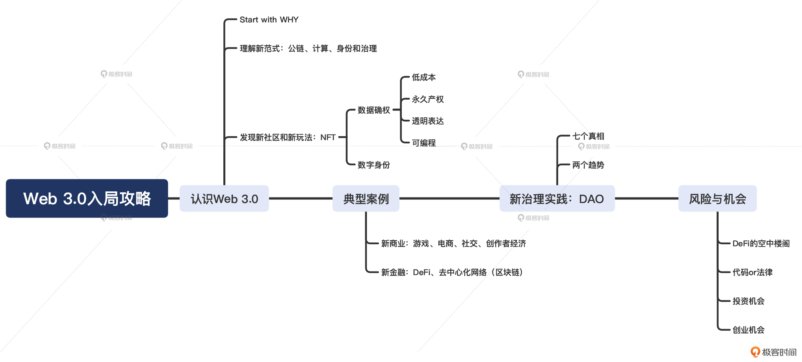

- 00 开篇词 Web 3.0：一场已经开启的互联网革命！.md
- 01 我们为什么需要Web 3.0？.md
- 02 公链：从计算分层开始.md
- 03 继续分层：身份和激励.md
- 04 NFT（一）：数据确权及其文化和商业价值的发现.md
- 05 NFT（二）：数据确权及其文化和商业价值的发现.md
- 06 边玩边赚能给游戏和电商带来新的商业模式吗？.md
- 07 Web 3.0社交和创作者经济.md
- 08 区块链：从底层重构金融.md
- 09 DeFi：“三无模式”开辟金融新蓝海.md
- 10 关于DAO的七个真相和两个趋势（一）.md
- 11 关于DAO的七个真相和两个趋势（二）.md
- 12 DeFi的空中楼阁能盖多高？.md
- 13 代码和法律，哪个更强？.md
- 14 Web 3.0正在形成的合力.md
- 特别放送 Yuga Labs：Web 3.0迪士尼的谛造之路.md
- 结束语 Web 3.0时代，你的创造和收获！.md
00 开篇词 Web 3.0：一场已经开启的互联网革命！
你好，我是郭大治。
Web 3.0最近一直在各个技术社区、社交媒体上被大家讨论得热火朝天，相信你也已经十分清楚它的存在。但面对Web 3.0，你可能仍然是一头雾水：有人认为Web 3.0通向未来新世界的大门，一定要抓住这个技术新浪潮；也有人认为它只是一种过于抽象和宏大的概念，一不小心就会踩坑……
那么，到底什么是Web 3.0呢？我们为什么需要Web 3.0呢？最重要的是，它能给我们的世界带来什么改变？
开门见山地说，我们这门课程，主要就是来搞清楚这些问题的。
现代互联网发展中的冲突
作为现代人，我们对互联网的依赖越来越深，离开了互联网，基本上就意味着和社会完全脱节。而当下的互联网正在经历一场“自下而上”的革命，而且这场变革的结果，不是简单地把互联网变得更好或者更坏，而是让互联网和我们走得更近，我们每个人都将变成互联网的一部分。我所说的这场变革，就是Web 3.0。
两个问题
可能我这么说，你是没有什么太大感觉的，一起看两个实际的问题吧。
第一，全社会对于互联网服务越来越依赖，但互联网服务的公共属性却和互联网公司的私人属性形成了越来越强烈的冲突。什么意思？举个例子，目前，Facebook和Google这些互联网巨头的用户规模已经远远超过了一些国家的人口规模，不论是人们的日常沟通还是政府部门发布一些重要消息，都会通过他们来发布。但是Facebook就会因为和澳大利亚政府没有谈妥“报导收费”的问题，而给整个澳大利亚“拔网线”，以致于当地政府部门连防疫相关的信息都无法发布。
第二，当前的互联网，已经处于几大互联网公司各自为政的一种状态，而这种分裂的状态，成为了制约网络效应进一步发挥的主要原因。例如，支付宝和微信作为两大国民应用，它们因为占据了流量上的便利位置，获得了市场上的巨大优势，本来技术上完全可以做到互联互通，为我们带来更大的便利，但是因为这俩的竞争关系，很多时候都需要我们用户去做非此即彼的选择。
所以，这两个方面就成为了推动互联网发生变革的主要动力，互联网需要借助于Web 3.0的发展为自己争取新的生长机会。
如何改变
那么，互联网应该按照什么逻辑如何去寻找获得变革的机会呢？
答案就是按照数据的逻辑，重新组织整个互联网的产业链条，按照数据产生、数据存储和数据使用的具体分工，明确数据归属、实现数据价值、完成利益分配，并建立可以实现上述目标的基础设施和生态体系，这些方案的汇总就是 Web 3.0！
在我看来，现在我们正处在这样一个时间节点，数据已经取代人力、土地和资本，成为了我们经济生活中最活跃的要素，但作为数字经济载体的互联网自身，却陷入了“功能性衰退”。
而Web 3.0，就是要把目前的互联网从技术底层打开，在技术架构的层面，就让互联网实现一种开放性，实现一种让数据从存储到使用，再从计算到应用都能脱离“单点故障”的制约，让互联网从“硬件”到“软件”都实现一种“绝对杜绝资源垄断，但功能更加强大”的开放性。
简单地说，就是要用纵向的分层去打破横向的垄断，构建一个从底层通信到不断叠加的各项应用都实现去中心化的互联网！
当然，去中心化的互联网不可能从天而降，但近几年区块链、人工智能等数据技术的发展，已经为这种变革提供了可能。基于密码学原理和共识机制，比特币也第一次向世人展示了一款去中心化产品的可能性；基于对比特币的扩展，以太坊作为“世界通用账本”，也已经支撑着成千上万种去中心化应用的运行。
可以见得，区块链和互联网的结合，已经为我们提供了一个以去中心化架构解决互联网“功能性衰退”的可能的方案。
这个方案将为我们带来至少类比2000年之后，互联网从过度的市场泡沫转向收益估值的那样量级的一次机遇。那我们能在这场变革中收获什么呢？甚至我们能做点什么去加速它，去成为历史的参与者？
行动方案
一方面，如果你具有一定的技术背景，那么你在Web 3.0中的优势就非常明显了。毕竟以太坊、Uniswap、Metamask等等这些项目，都是由技术背景的开发人员主导发展起来的。以太坊就不用说了，Uniswap和Metamask项目估值都早已达到10亿级；在Web 3.0，一个解决自己使用难题的小的开发，就可能就是一次创业的开始。
还需要说明的是，Web 3.0并不是一个只为IT技术人员准备的Party，而是一个对拥有各种技能的人都敞开大门的舞台，你可以到 Bankless DAO 的各种频道里去看一看，各种非技术背景但又有一技之长的人，都能在那里找到自己的用武之地。
另一方面，即使你还没有在技能方面有明显的储备，那你至少可以成为一个数据的创造者，可以通过积极参与早期的产品体验而获得项目奖励。每一个勇于探索或者尝试Web 3.0各类应用的用户，不仅可能直接获得项目奖励，还有可能通过这些活动建立技能方面的优势，来帮助别人，比如B站上面，各种去中心化应用教程总能获得更多的关注。
课程设计
所以说，Web 3.0是一次属于每个人的机会，但如果你还不能“大踏步上路”的话，在你和Web 3.0之间，就只差了一次让你“静下心来，看清方向，找到兴趣，跑步上车”的课程了。我和极客时间的小伙伴就为你精心准备了这样一次课程，在这门课程中，我会帮助你：
- 揭秘：Web 3.0技术发展现状。在“认识Web 3.0”这个模块里，我会为你阐述基于公链、账户和身份认证技术的组合，并会带你了解如何构建Web 3.0的新型基础设施，以此实现理解Web 3.0技术基础逻辑的目标。
- 探究：Web 3.0新玩法与新物种。在这里，你可以了解到DeFi是如何通过和传统金融的结合，实现进一步的扩张的；NFT作为新型的数据确权制度，是如何打造“数字版迪士尼”的；新的去中心化应用，是如何在游戏、商业、社交等领域开创新的商业模式的；以及DAO是如何打造“工具+社群”新业态的。
- 洞悉：Web 3.0未来应用趋势。在区块链之外，人工智能、物联网等数据技术，是如何与Web3.0结合为互联网带来新的发展空间的？传统互联网公司、政府部门、金融机构、投资机构，会如何融入Web 3.0实现自我升级？在“风险与机会”这个模块里，你会通过我的梳理，参透“上车”的主要路径和避免踩坑的几种逻辑。
- 升维：除以上基础知识和基本规律的学习之外，整个课程中都会以案例驱动，帮你看清风险事件和市场变幻背后的底层逻辑，把握Web3.0的“变与不变”，发现Web 3.0蕴藏的价值与机遇。

为什么是我？
讲到这里，我们不妨认识一下，给Web 3.0成长的故事增加一个小小的注脚。
我本人是经济学背景，早年曾就职于传统金融机构从事信用评级工作，在2015年左右的时候进入互联网金融行业，也就是现在所说的金融科技，开始搞行业研究。也是一个偶然的机会，我了解到了比特币，马上就被这个非常“硬核”的家伙所吸引，虽然说我不会码代码，但却被比特币代码体现的逻辑所折服。不得不承认，站在经济学的视角，比特币也堪称一个伟大的产品。
之前呢，为了让更多的人了解比特币和区块链，我和几个朋友合著了一本书《区块链：重塑经济与世界》，这本书不仅成为了大陆地区第一本关于区块链的书籍，还推广到了港台地区。在此之后，我把主要精力都放在了区块链相关研究上，同时我加入火币，担任区块链研究团队负责人。
在火币一年多的时间里，我们率先在行业完成了数字资产分类，并建立了SMARTChain评价模型，针对各类资产进行分析打分，我们做的这些工作在当时的行业都是开创性的。再后来，由于火币转战海外，我也离开了火币，但区块链行业研究和投资一直都是我最核心的工作。
可以说，这一次和极客时间合作打造的这门课程，汇集了我多年来身处行业的深度思考和最前沿的观察。我希望这门课能带给你的，不仅是了解Web 3.0发展的基本逻辑和主要方向，还可以一次性梳理清楚Web 3.0发展到今天，已经呈现出的主要脉络，让你能一次性抓住每个分支的最前沿。
目的地不远，只待你我开启探索，我们课堂见！
© 2019 - 2023 Liangliang Lee. Powered by gin and hexo-theme-book.